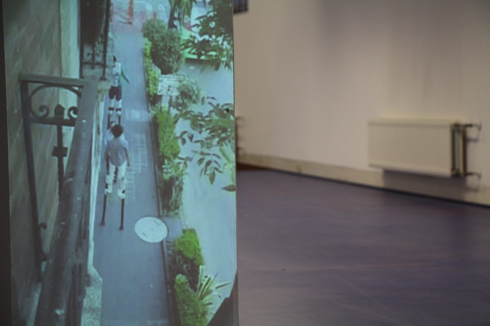

With Sarah Demoan and Julieta Aguinaco, we have Curated; Site of future trailer park, a return to an exchange that took place during the Welcome to Econotopia project, initiated at the Dutch Art Institute in 2013, and curated by Renée Ridgway. The participants traveled to Mexico city and Marfa, Texas as a close research of the relationship between the geo-political issues, Donald Judd and the mirage. The exhibition shows a series of outcomes made on site and after, as well as a publication. These re-articulations are an attempt to relate the issues explored within Welcome to Econotopia; now in the context of the land we stood on as a physical and social space.
